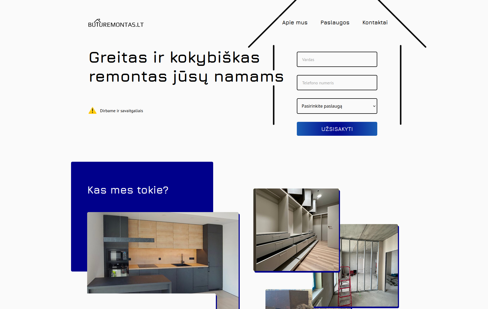

~:fish — Konsole
guest@this-pc:~$ cd /etc/home/
guest@this-pc:~$ ls
- welcome.sh
- logo.jpg
- deleted.txt
- unknown.odt
- music.mp3
- notes.md
guest@this-pc:~$ ./welcome.sh
Loading portfolio...
✔ Projects
✔ Good vibes
✔ Code experiments
✔ Lore: devlogs, notes, sketches
guest@this-pc:~$ _
/etc/usr/vladislav/about
Hello! I'm Vladislav, a passionate junior Front-End developer with a strong background in HTML, CSS, and JavaScript. I love creating clean, user-friendly websites that not only look great but also function seamlessly. My journey into web development began with a fascination for design and technology, which quickly evolved into a career. I’m always eager to learn, grow, and stay up to date with the latest tools and techniques in the industry.
Outside of coding, I have a creative side — I'm also involved in music, experimenting with sound design and composition. When I’m not working on web projects, you can usually find me exploring new trends in digital design or working on my music project.
Currently based in Vilnius, Lithuania, I’m open to new opportunities and excited to contribute to innovative projects. Let’s build something amazing together!
/etc/usr/vladislav/about/skills
/etc/usr/vladislav/portfolio
Buturemontas.lt Landing Page
This project is a trial task where I recreated a landing page for "Buturemontas.lt", a renovation company based in Vilnius that specializes in interior finishing, home repair services, and custom furniture manufacturing. Using HTML and CSS, I carefully followed the provided design to ensure visual consistency and a smooth user experience.
GitHubArtist Landing Page
This project is a personal landing page designed to showcase my work as an artist. Using HTML and CSS, I followed a Penpot prototype to create a visually engaging experience that reflects my unique style and artistic vision. The design features clean lines, modern typography, and an intuitive layout, all aimed at providing a seamless user experience while highlighting my portfolio and brand.
GitHub